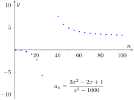
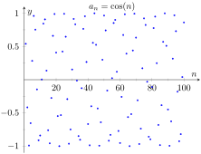
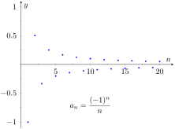
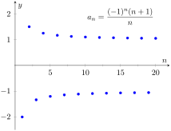
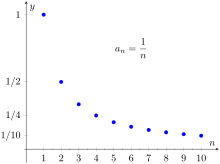
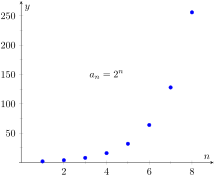

We commonly refer to a set of events that occur one after the other as a sequence of events. In mathematics, we use the word sequence to refer to an ordered set of numbers, i.e., a set of numbers that “occur one after the other.”
For instance, the numbers 2, 4, 6, 8, …, form a sequence. The order is important; the first number is 2, the second is 4, etc. It seems natural to seek a formula that describes a given sequence, and often this can be done. For instance, the sequence above could be described by the function \(a(n) = 2n\text{,}\) for the values of \(n = 1, 2, \ldots\) To find the \(10\)th term in the sequence, we would compute \(a(10)\text{.}\) This leads us to the following, formal definition of a sequence.
Definition9.1.2.Sequence.
A sequence is a function \(a(n)\) whose domain is \(\mathbb{N}\text{.}\) The range of a sequence is the set of all distinct values of \(a(n)\text{.}\)
The terms of a sequence are the values \(a(1)\text{,}\)\(a(2)\text{,}\) …, which are usually denoted with subscripts as \(a_1\text{,}\)\(a_2\text{,}\) ….
A sequence \(a(n)\) is often denoted as \(\{a_n\}\text{.}\)
Definition9.1.3.
A factorial refers to the product of a descending sequence of natural numbers. For example, the expression \(4!\) (read as \(4\) factorial) refers to the number \(4\cdot 3\cdot2\cdot1 = 24\text{.}\)
In general, \(n! = n\cdot (n-1)\cdot(n-2)\cdots 2\cdot1\text{,}\) where \(n\) is a natural number.
We define \(0! = 1\text{.}\) While this does not immediately make sense, it makes many mathematical formulas work properly.
Example9.1.4.Listing terms of a sequence.
List the first four terms of the following sequences.
We can plot the terms of a sequence with a scatter plot. The horizontal axis is used for the values of \(n\text{,}\) and the values of the terms are plotted on the vertical axis. To visualize this sequence, see Figure 9.1.5.
We gave one extra term to begin to show the pattern of signs is “\(-\text{,}\)\(-\text{,}\)\(+\text{,}\)\(+\text{,}\)\(-\text{,}\)\(-\text{,}\)\(\ldots\)”, due to the fact that the exponent of \(-1\) is a special quadratic. This sequence is plotted in Figure 9.1.7.
We should first note that there is never exactly one function that describes a finite set of numbers as a sequence. There are many sequences that start with 2, then 5, as our first example does. We are looking for a simple formula that describes the terms given, knowing there is possibly more than one answer.
Note how each term is 3 more than the previous one. This implies a linear function would be appropriate: \(a(n) = a_n = 3n + b\) for some appropriate value of \(b\text{.}\) If we were to think in terms of ordered pairs, they would be of the form \((n,a(n))\text{.}\) So one such ordered pair would be \((1,2)\text{.}\) As we want \(a_1=2\text{,}\) we set \(b=-1\text{.}\) Thus \(a_n = 3n-1\text{.}\)
First notice how the sign changes from term to term. This is most commonly accomplished by multiplying the terms by either \((-1)^n\) or \((-1)^{n+1}\text{.}\) Using \((-1)^n\) multiplies the odd indexed terms by \((-1)\text{.}\) Thus the first term would be negative and the second term would be positive. Multiplying by \((-1)^{n+1}\) multiplies the even indexed terms by \((-1)\text{.}\) Thus the second term would be negative and the first term would be positive. As this sequence has negative even indexed terms, we will multiply by \((-1)^{n+1}\text{.}\)
After this, we might feel a bit stuck as to how to proceed. At this point, we are just looking for a pattern of some sort: what do the numbers 2, 5, 10, 17, etc., have in common? There are many correct answers, but the one that we'll use here is that each is one more than a perfect square. That is, \(2=1^2+1\text{,}\)\(5=2^2+1\text{,}\)\(10=3^2+1\text{,}\) etc. Thus our formula is \(b_n= (-1)^{n+1}(n^2+1)\text{.}\)
One who is familiar with the factorial function will readily recognize these numbers. They are \(0!\text{,}\)\(1!\text{,}\)\(2!\text{,}\)\(3!\text{,}\) etc. Since our sequences start with \(n=1\text{,}\) we cannot write \(c_n = n!\text{,}\) for this misses the \(0!\) term. Instead, we shift by 1, and write \(c_n = (n-1)!\text{.}\)
This one may appear difficult, especially as the first two terms are the same, but a little “sleuthing” will help. Notice how the terms in the numerator are always multiples of 5, and the terms in the denominator are always powers of 2. Does something as simple as \(d_n = \frac{5n}{2^n}\) work?
When \(n=1\text{,}\) we see that we indeed get \(5/2\) as desired. When \(n=2\text{,}\) we get \(10/4 = 5/2\text{.}\) Further checking shows that this formula indeed matches the other terms of the sequence.
A common mathematical endeavor is to create a new mathematical object (for instance, a sequence) and then apply previously known mathematics to the new object. We do so here. The fundamental concept of calculus is the limit, so we will investigate what it means to find the limit of a sequence.
Definition9.1.9.Limit of a Sequence, Convergent, Divergent.
Let \(\{a_n\}\) be a sequence and let \(L\) be a real number. Given any \(\varepsilon \gt 0\text{,}\) if an \(N\) can be found such that \(\abs{a_n-L}\lt \varepsilon\) for all \(n\gt N\text{,}\) then we say the limit of \(\{a_n\}\text{,}\) as \(n\) approaches infinity, is \(L\text{,}\) denoted
If \(\lim\limits_{n\to\infty} a_n\) exists, we say the sequence converges; otherwise, the sequence diverges.
This definition states, informally, that if the limit of a sequence is \(L\text{,}\) then if you go far enough out along the sequence, all subsequent terms will be really close to \(L\text{.}\) Of course, the terms “far enough” and “really close” are subjective terms, but hopefully the intent is clear.
This definition is reminiscent of the \(\varepsilon\)-\(\delta\) proofs of Chapter 1. In that chapter we developed other tools to evaluate limits apart from the formal definition; we do so here as well.
Definition9.1.11.Limit of Infinity, Divergent Sequence.
Let \(\{a_n\}\) be a sequence. We say \(\lim\limits_{n\to\infty} a_n=\infty\) if for all \(M \gt 0\text{,}\) there exists a number \(N\) such that if \(n\ge N\text{,}\) then \(a_n \gt M\text{.}\) In this case, we say the sequence diverges to \(\infty\text{.}\)
This definition states, informally, that if the limit of \(a_n\) is \(\infty\text{,}\) then you can guarantee that the terms of \(a_n\) will get arbitrarily large (larger than any value of \(M\) that you think of), by going out far enough in the sequence.
Theorem9.1.12.Limit of a Sequence.
Let \(\{a_n\}\) be a sequence, let \(L\) be a real number, and let \(f(x)\) be a function whose domain contains the positive real numbers where \(f(n) = a_n\) for all \(n\) in \(\mathbb{N}\text{.}\)
If \(\lim\limits_{x\to\infty} f(x) = L\text{,}\) then \(\lim\limits_{n\to\infty} a_n = L\text{.}\)
If \(\lim\limits_{x\to\infty} f(x) = \infty\text{,}\) then \(\lim\limits_{n\to\infty} a_n = \infty\text{.}\)
Theorem 9.1.12 allows us, in certain cases, to apply the tools developed in Chapter 1 to limits of sequences. Note two things not stated by the theorem:
If \(\lim\limits_{x\to\infty}f(x)\) does not exist, we cannot conclude that \(\lim\limits_{n\to\infty} a_n\) does not exist. It may, or may not, exist. For instance, we can define a sequence \(\{a_n\} = \{\cos(2\pi n)\}\text{.}\) Let \(f(x) = \cos(2\pi x)\text{.}\) Since the cosine function oscillates over the real numbers, the limit \(\lim\limits_{x\to\infty}f(x)\) does not exist. However, for every positive integer \(n\text{,}\)\(\cos(2\pi n) = 1\text{,}\) so \(\lim\limits_{n\to\infty} a_n = 1\text{.}\)
If we cannot find a function \(f(x)\) whose domain contains the positive real numbers where \(f(n) = a_n\) for all \(n\) in \(\mathbb{N}\text{,}\) we cannot conclude \(\lim\limits_{n\to\infty} a_n\) does not exist. It may, or may not, exist.
Example9.1.13.Determining convergence/divergence of a sequence.
Determine the convergence or divergence of the following sequences.
Using Theorem 1.6.21, we can state that \(\lim\limits_{x\to\infty} \frac{3x^2-2x+1}{x^2-1000} = 3\text{.}\) (We could have also directly applied L'Hospital's Rule.) Thus the sequence \(\{a_n\}\) converges, and its limit is 3. A scatter plot of every 5 values of \(a_n\) is given in Figure 9.1.14. The values of \(a_n\) vary widely near \(n=30\text{,}\) ranging from about \(-73\) to \(125\text{,}\) but as \(n\) grows, the values approach 3.

Figure9.1.14.Scatter plot for the sequence in Item 1
The limit \(\lim\limits_{x\to\infty}\cos(x)\) does not exist, as \(\cos(x)\) oscillates (and takes on every value in \([-1,1]\) infinitely many times). Thus we cannot apply Theorem 9.1.12. The fact that the cosine function oscillates strongly hints that \(\cos(n)\text{,}\) when \(n\) is restricted to \(\mathbb{N}\text{,}\) will also oscillate. Figure 9.1.15, where the sequence is plotted, shows that this is true. Because only discrete values of cosine are plotted, it does not bear strong resemblance to the familiar cosine wave. The proof of the following statement is beyond the scope of this text, but it is true: there are infinitely many integers \(n\) that are arbitrarily (i.e., very) close to an even multiple of \(\pi\text{,}\) so that \(\cos n \approx 1\text{.}\) Similarly, there are infinitely many integers \(m\) that are arbitrarily close to an odd multiple of \(\pi\text{,}\) so that \(\cos m \approx -1\text{.}\) As the sequence takes on values near 1 and \(-1\) infinitely many times, we conclude that \(\lim\limits_{n\to\infty}a_n\) does not exist.

Figure9.1.15.Scatter plot for the sequence in Item 2
We cannot actually apply Theorem 9.1.12 here, as the function \(f(x) = (-1)^x/x\) is not well defined. (What does \((-1)^{\sqrt{2}}\) mean? In actuality, there is an answer, but it involves complex analysis, beyond the scope of this text.) Instead, we invoke the definition of the limit of a sequence. By looking at the plot in Figure 9.1.16, we would like to conclude that the sequence converges to \(L=0\text{.}\) Let \(\epsilon>0\) be given. We can find a natural number \(m\) such that \(1/m \lt \varepsilon\text{.}\) Let \(n>m\text{,}\) and consider \(\abs{a_n - L}\text{:}\)
We have shown that by picking \(m\) large enough, we can ensure that \(a_n\) is arbitrarily close to our limit, \(L=0\text{,}\) hence by the definition of the limit of a sequence, we can say \(\lim\limits_{n\to\infty}a_n = 0\text{.}\)

Figure9.1.16.Scatter plot for the sequence in Item 3
In the previous example we used the definition of the limit of a sequence to determine the convergence of a sequence as we could not apply Theorem 9.1.12. In general, we like to avoid invoking the definition of a limit, and the following theorem gives us tool that we could use in that example instead.
Theorem9.1.17.Absolute Value Theorem.
Let \(\{a_n\}\) be a sequence. If \(\lim\limits_{n\to\infty} \abs{a_n} = 0\text{,}\) then \(\lim\limits_{n\to\infty} a_n = 0\)
Let \(\lim\limits_{n\to\infty} \abs{a_n} = 0\text{.}\) We start by noting that \(-\abs{a_n}\leq a_n \leq \abs{a_n}\text{.}\) If we apply limits to this inequality:
Since this limit is 0, we can apply Theorem 9.1.17 and state that \(\lim\limits_{n\to\infty} a_n=0\text{.}\)
Because of the alternating nature of this sequence (i.e., every other term is multiplied by \(-1\)), we cannot simply look at the limit \(\lim\limits_{x\to\infty} \frac{(-1)^x(x+1)}{x}\text{.}\) We can try to apply the techniques of Theorem 9.1.17:
We have concluded that when we ignore the alternating sign, the sequence approaches 1. This means we cannot apply Theorem 9.1.17; it states the the limit must be 0 in order to conclude anything.

Figure9.1.19.A plot of a sequence in Example 9.1.18, part 2
Since we know that the signs of the terms alternate and we know that the limit of \(\abs{a_n}\) is 1, we know that as \(n\) approaches infinity, the terms will alternate between values close to 1 and \(-1\text{,}\) meaning the sequence diverges. A plot of this sequence is given in Figure 9.1.19.
We continue our study of the limits of sequences by considering some of the properties of these limits.
Theorem9.1.20.Properties of the Limits of Sequences.
Let \(\{a_n\}\) and \(\{b_n\}\) be sequences such that \(\lim\limits_{n\to\infty} a_n = L\text{,}\)\(\lim\limits_{n\to\infty} b_n = K\text{,}\) and let \(c\) be a real number.
Since \(\lim\limits_{n\to\infty} a_n = 0\) and \(\lim\limits_{n\to\infty} b_n = e\text{,}\) we conclude that \(\lim\limits_{n\to\infty} (a_n+b_n) = 0+e = e\text{.}\) So even though we are adding something to each term of the sequence \(b_n\text{,}\) we are adding something so small that the final limit is the same as before.
Since \(\lim\limits_{n\to\infty} b_n = e\) and \(\lim\limits_{n\to\infty} c_n = 5\text{,}\) we conclude that \(\lim\limits_{n\to\infty} (b_n\cdot c_n) = e\cdot 5 = 5e\text{.}\)
Since \(\lim\limits_{n\to\infty} a_n = 0\text{,}\) we have \(\lim\limits_{n\to\infty} 1000a_n =1000\cdot 0 = 0\text{.}\) It does not matter that we multiply each term by 1000; the sequence still approaches 0. (It just takes longer to get close to 0.)
There is more to learn about sequences than just their limits. We will also study their range and the relationships terms have with the terms that follow. We start with some definitions describing properties of the range.
Definition9.1.23.Bounded and Unbounded Sequences.
A sequence \(\{a_n\}\) is said to be bounded if there exist real numbers \(m\) and \(M\) such that \(m \leq a_n \leq M\) for all \(n\) in \(\mathbb{N}\text{.}\) The number \(m\) is called a lower bound for the sequence, and the number \(M\) is called an upper bound for the sequence.
A sequence \(\{a_n\}\) is said to be unbounded if it is not bounded.
A sequence \(\{a_n\}\) is said to be bounded above if there exists an \(M\) such that \(a_n \lt M\) for all \(n\) in \(\mathbb{N}\text{;}\) it is bounded below if there exists an \(m\) such that \(m\lt a_n\) for all \(n\) in \(\mathbb{N}\text{.}\)
It follows from this definition that an unbounded sequence may be bounded above or bounded below; a sequence that is both bounded above and below is simply a bounded sequence.
Example9.1.24.Determining boundedness of sequences.
Determine the boundedness of the following sequences.
The terms of this sequence are always positive but are decreasing, so we have \(0\lt a_n\lt 2\) for all \(n\text{.}\) Thus this sequence is bounded. Figure 9.1.25.(a)illustrates this.
The terms of this sequence obviously grow without bound. However, it is also true that these terms are all positive, meaning \(0\lt a_n\text{.}\) Thus we can say the sequence is unbounded, but also bounded below. Figure 9.1.25.(b) illustrates this.
(a)
(b)
Figure9.1.25.A plot of \(\{a_n\} = \{1/n\}\) and \(\{a_n\} = \{2^n\}\) from Example 9.1.24
The previous example produces some interesting concepts. First, we can recognize that the sequence \(\ds\left\{1/n\right\}\) converges to 0. This says, informally, that “most” of the terms of the sequence are “really close” to 0. This implies that the sequence is bounded, using the following logic. First, “most” terms are near 0, so we could find some sort of bound on these terms (using Definition 9.1.9, the bound is \(\varepsilon\)). That leaves a “few” terms that are not near 0 (i.e., a finite number of terms). A finite list of numbers is always bounded.
This logic implies that if a sequence converges, it must be bounded. This is indeed true, as stated by the following theorem.
Theorem9.1.26.Convergent Sequences are Bounded.
Let \(\ds \left\{a_n\right\}\) be a convergent sequence. Then \(\{a_n\}\) is bounded.
In Example 9.1.22 we saw the sequence \(\ds \{b_n\} = \left\{\left(1+1/n\right)^{n}\right\}\text{,}\) where it was stated that \(\lim\limits_{n\to\infty} b_n = e\text{.}\) (Note that this is simply restating part of Theorem 1.3.17. The limit can also be found using logarithms and L'Hospital's rule.) Even though it may be difficult to intuitively grasp the behavior of this sequence, we know immediately that it is bounded.
Another interesting concept to come out of Example 9.1.24 again involves the sequence \(\{1/n\}\text{.}\) We stated, without proof, that the terms of the sequence were decreasing. That is, that \(a_{n+1} \lt a_n\) for all \(n\text{.}\) (This is easy to show. Clearly \(n \lt n+1\text{.}\) Taking reciprocals flips the inequality: \(1/n \gt 1/(n+1)\text{.}\) This is the same as \(a_n \gt a_{n+1}\text{.}\)) Sequences that either steadily increase or decrease are important, so we give this property a name.
Definition9.1.28.Monotonic Sequences.
A sequence \(\{a_n\}\) is monotonically increasing if \(a_n \leq a_{n+1}\) for all \(n\text{,}\) i.e.,
In each of the following, we will examine \(a_{n+1}-a_n\text{.}\) If \(a_{n+1}-a_n \geq 0\text{,}\) we conclude that \(a_n\leq a_{n+1}\) and hence the sequence is increasing. If \(a_{n+1}-a_n\leq 0\text{,}\) we conclude that \(a_n\geq a_{n+1}\) and the sequence is decreasing. Of course, a sequence need not be monotonic and perhaps neither of the above will apply.
We also give a scatter plot of each sequence. These are useful as they suggest a pattern of monotonicity, but analytic work should be done to confirm a graphical trend.
Since \(a_{n+1}-a_n\gt 0\) for all \(n\text{,}\) we conclude the sequence is increasing.
We can clearly see in Figure 9.1.(c), where the sequence is plotted, that it is not monotonic. However, it does seem that after the first 4 terms it is decreasing. To understand why, perform the same analysis as done before:
We want to know when this is greater than, or less than, 0. The denominator is always positive, therefore we are only concerned with the numerator. For small values of \(n\text{,}\) the numerator is positive. As \(n\) grows large, the numerator is dominated by \(-10n^2\text{,}\) meaning the entire fraction will be negative; i.e., for large enough \(n\text{,}\)\(a_{n+1}-a_n \lt 0\text{.}\) Using the quadratic formula we can determine that the numerator is negative for \(n\geq 5\text{.}\) In short, the sequence is simply not monotonic, though it is useful to note that for \(n\geq 5\text{,}\) the sequence is monotonically decreasing.
Again, the plot in Figure 9.1.(d) shows that the sequence is not monotonic, but it suggests that it is monotonically decreasing after the first term. We perform the usual analysis to confirm this.
When \(n=1\text{,}\) the above expression is \(\gt 0\text{;}\) for \(n\geq 2\text{,}\) the above expression is \(\lt 0\text{.}\) Thus this sequence is not monotonic, but it is monotonically decreasing after the first term.
Knowing that a sequence is monotonic can be useful. Consider, for example, a sequence that is monotonically decreasing and is bounded below. We know the sequence is always getting smaller, but that there is a bound to how small it can become. This is enough to prove that the sequence will converge, as stated in the following theorem.
Theorem9.1.32.Bounded Monotonic Sequences are Convergent.
Let \(\{a_n\}\) be a monotonically increasing sequence that is bounded above. Then \(\{a_n\}\) converges.
Let \(\{a_n\}\) be a monotonically decreasing sequence that is bounded below. Then \(\{a_n\}\) converges.
Consider once again the sequence \(\{a_n\} = \{1/n\}\text{.}\) It is easy to show it is monotonically decreasing and that it is always positive (i.e., bounded below by 0). Therefore we can conclude by Theorem 9.1.32 that the sequence converges. We already knew this by other means, but in the following section this theorem will become very useful.
We can replace Theorem 9.1.32 with the statement “Let \(\{a_n\}\) be a bounded, monotonic sequence. Then \(\{a_n\}\) converges; i.e., \(\ds \lim_{n \to\infty}a_n\) exists.” We leave it to the reader in the exercises to show the theorem and the above statement are equivalent.
Figure9.1.33.Finding the limit of a bounded, monotonic sequence
Sequences are a great source of mathematical inquiry. The On-Line Encyclopedia of Integer Sequences (oeis.org) contains thousands of sequences and their formulae. (As of this writing, there are 328,977 sequences in the database.) Perusing this database quickly demonstrates that a single sequence can represent several different “real life” phenomena.
Interesting as this is, our interest actually lies elsewhere. We are more interested in the sum of a sequence. That is, given a sequence \(\{a_n\}\text{,}\) we are very interested in \(a_1+a_2+a_3+\cdots\text{.}\) Of course, one might immediately counter with “Doesn't this just add up to ‘infinity’?” Many times, yes, but there are many important cases where the answer is no. This is the topic of series, which we begin to investigate in Section 9.2.
ExercisesExercises
Terms and Concepts
1.
Use your own words to define a sequence.
2.
The domain of a sequence is the numbers.
3.
Use your own words to describe the range of a sequence.
4.
Describe what it means for a sequence to be bounded.
Problems
Exercise Group.
In the following exercises, give the first five terms of the given sequence.
In the following exercises, determine whether the sequence is monotonically increasing or decreasing. If it is not, determine if there is an \(m\) such that it is monotonic for all \(n\geq m\text{.}\)
The following exercises explore further the theory of sequences.
39.
Prove Theorem 9.1.17; that is, use the definition of the limit of a sequence to show that if \(\lim\limits_{n\to\infty} \abs{a_n} = 0\text{,}\) then \(\lim\limits_{n\to\infty} a_n = 0\text{.}\)
40.
Let \(\{a_n\}\) and \(\{b_n\}\) be sequences such that \(\lim\limits_{n\to\infty} a_n = L\) and \(\lim\limits_{n\to\infty} b_n = K\text{.}\)
Show that if \(a_n\lt b_n\) for all \(n\text{,}\) then \(L\leq K\text{.}\)
Give an example where \(L = K\text{.}\)
41.
Prove the Squeeze Theorem for sequences: Let \(\{a_n\}\) and \(\{b_n\}\) be such that \(\lim\limits_{n\to\infty} a_n = L\) and \(\lim\limits_{n\to\infty} b_n = L\text{,}\) and let \(\{c_n\}\) be such that \(a_n\leq c_n\leq b_n\) for all \(n\text{.}\) Then \(\lim\limits_{n\to\infty} c_n = L\)
42.
Prove the statement “Let \(\{a_n\}\) be a bounded, monotonic sequence. Then \(\{a_n\}\) converges; i.e., \(\ds \lim_{n \to\infty}a_n\) exists.” is equivalent to Theorem 9.1.32. That is,
Show that if Theorem 9.1.32 is true, then above statement is true, and
Show that if the above statement is true, then Theorem 9.1.32 is true.